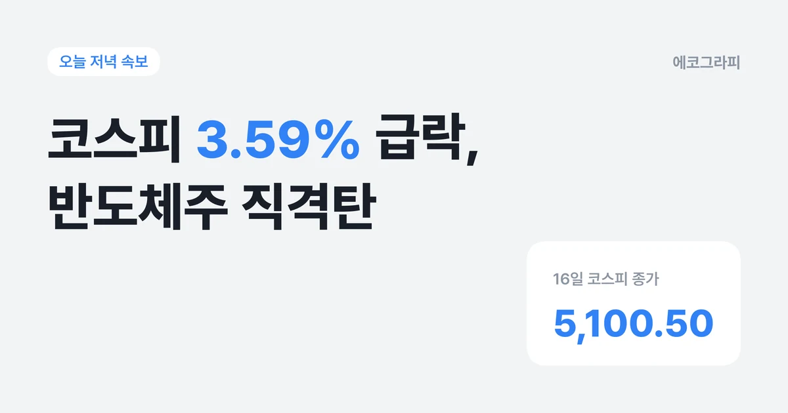
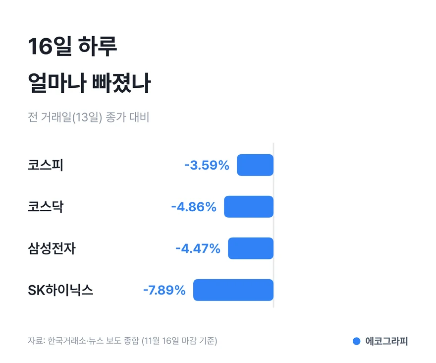
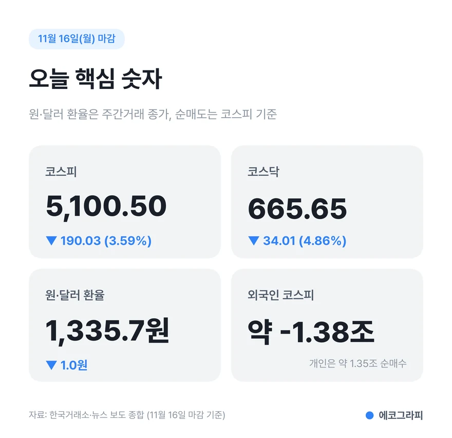
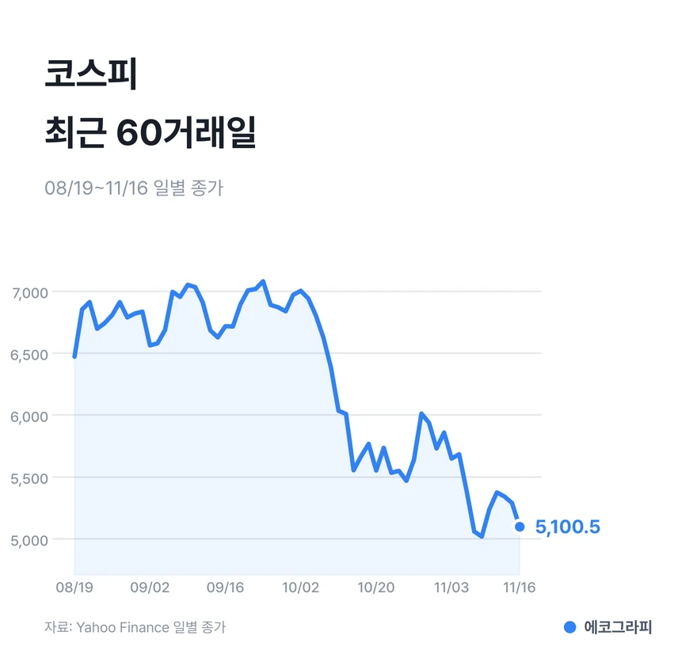

오늘 코스피는 아침엔 조금 오르며 출발했어요(5,305선). 그런데 곧 방향을 바꿔 오후 내내 밀렸고, 결국 190포인트 넘게 빠진 5,100.50에 끝났어요. 3거래일 연속 하락이에요. 코스닥은 더 크게 흔들려 4.86% 떨어졌어요.
중심에는 엔비디아가 있었어요. 지난주 젠슨 황이 CEO에서 물러나고 CFO였던 콜레트 크레스가 임시 CEO를 맡았는데, 새 체제에서 엔비디아가 AI 업계에 넣던 투자 자금을 크게 줄일 것이라는 미국 언론 보도가 나왔어요. "AI 투자 흐름이 꺾이는 것 아니냐"는 걱정이 반도체주 전체로 번진 거예요.
여기에 미국 법원이 삼성전자·SK하이닉스·마이크론의 D램 가격 담합 집단소송을 기각해 달라는 신청을 받아들이지 않았다는 소식, 미국의 AI 칩 수출 규제 강화 움직임도 겹쳤어요.


최근 흐름을 보면 이번 하락이 얼마나 컸는지 한눈에 보여요. 코스피는 10월 말 6,000선에서 이달 9일 5,018까지 밀렸다가, 11일 5,375까지 반등했어요. 그런데 사흘 연속 하락하며 다시 5,100선으로 돌아왔어요.

우리 증시는 반도체 비중이 아주 커요. 삼성전자와 SK하이닉스 두 종목만으로도 코스피의 큰 몫을 차지하기 때문에, 이 둘이 빠지면 지수 전체가 크게 흔들려요. 오늘도 전기·전자 업종이 5% 넘게 빠지며 지수를 끌어내렸어요.
반대로 은행·보험·음식료처럼 경기에 덜 민감한 업종은 오히려 올랐어요. 하나금융지주·KB금융·신한지주가 1~2% 올랐고, 음식료·담배 업종은 2%대 상승했어요. 돈이 '성장주'에서 '버티는 주식'으로 옮겨 간 하루였어요.
한 줄 정리: 오늘 하락은 한국 경제 자체보다 "AI 반도체 투자가 계속될까"에 대한 의심이 커진 영향이에요.
오늘 해볼 것: 급하게 사고팔기보다, 내 계좌에서 반도체 관련 비중이 몇 %인지 먼저 적어 보세요.
내일 아침 시황 글에서 밤사이 미국 시장 흐름과 함께 이어서 정리할게요.
흔하지는 않아요. 하루 3% 이상 움직이면 '급락'으로 보고, 그 원인이 무엇인지 따로 짚어 볼 만한 날이에요.
오늘은 사이드카나 서킷브레이커 발동 소식은 없었어요. 하락 폭은 컸지만 장중 거래를 멈추는 단계까지는 가지 않았어요.
반도체 수출 대금 같은 달러가 시장에 들어오면서 외국인 매도로 생긴 달러 수요를 일부 상쇄했다는 분석이 나왔어요.
알 수 없어요. 실적 숫자보다 다음 분기 전망과 AI 투자 계획이 더 중요하게 읽힐 수 있어요. 결과를 보고 판단하는 게 좋아요.
※ 2026년 11월 기준으로 정리한 글입니다. 세율·제도는 바뀔 수 있으니 거래 전 증권사·국세청 안내를 한 번 더 확인하세요. 특정 종목·상품의 매수·매도 권유가 아닙니다.